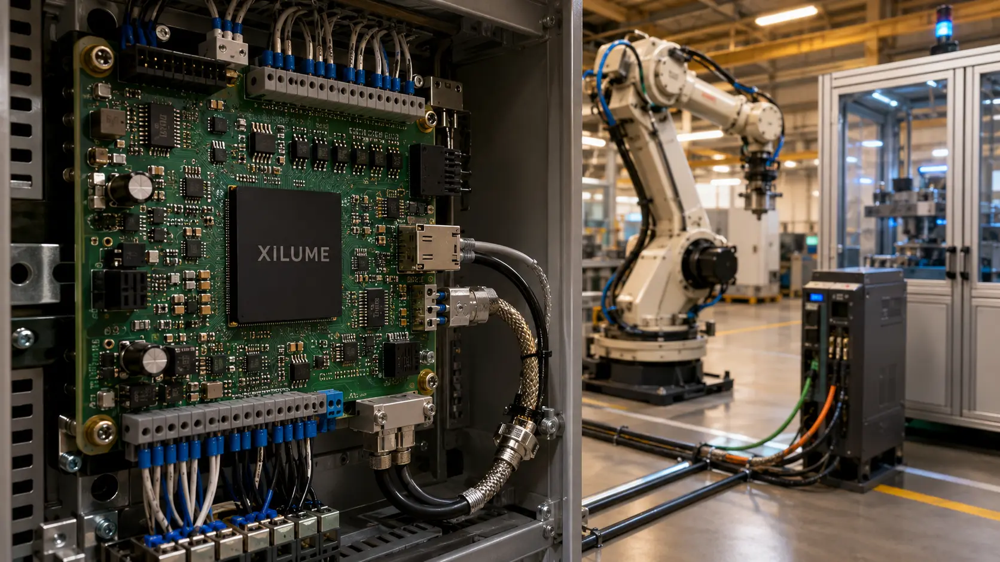
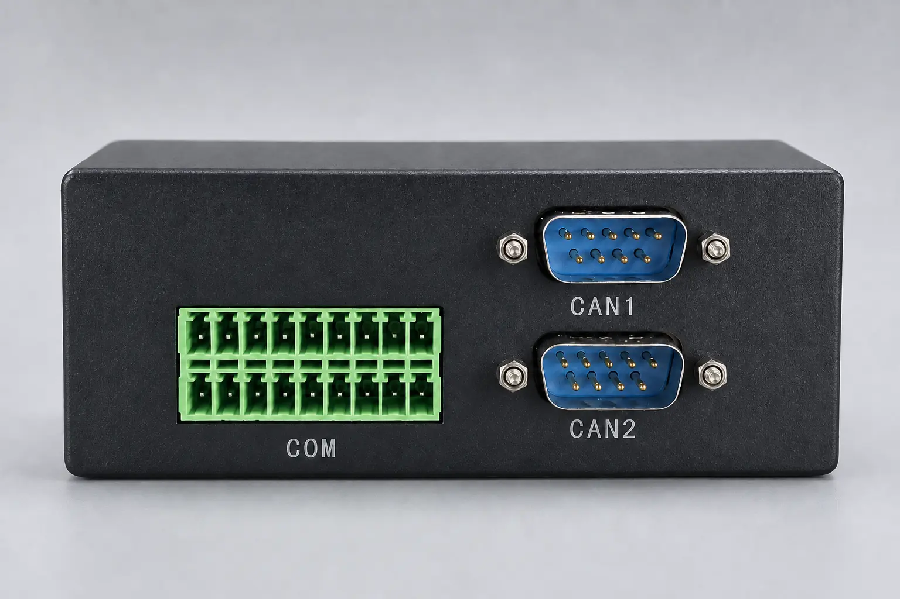

Eight channel paths
Keep CAN FD, RS-485, and RS-232 channels separately addressed.

A single controller for mixed CAN FD, RS-485, and RS-232 equipment.

KEY FEATURES
Keep CAN FD, RS-485, and RS-232 channels separately addressed.
Consolidate mixed industrial communication behind one USB interface.
Build repeatable test, service, and equipment-integration workflows.
INTERFACE MAP
LX88U48 coordinates the host protocol and all channel logic. External CAN FD, RS-485, and RS-232 physical-layer devices connect the controller to each field interface.

APPLICATIONS
DESIGN RESOURCES
LX88U48